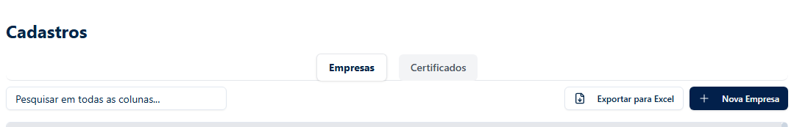
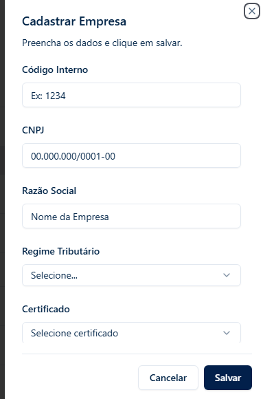

Acessando o Módulo de Certificados
Para iniciar a gestão dos certificados digitais, acesse o menu "Cadastros" na sua plataforma e, em seguida, clique na aba superior "Certificados".
Importando um Novo Certificado
Na aba de Certificados, localize e clique no botão verde "Importar Certificado" para abrir a janela de inclusão.

Na janela que se abrirá, você deverá fornecer as informações do arquivo A1:
- Arquivo PFX: Clique em "Escolher arquivo" para selecionar o certificado no seu computador.
- Senha: Informe a senha de instalação do certificado.
- CPF do Responsável: Informe o CPF da pessoa responsável pela entrega.
Atenção ao CPF: Usamos este dado para a confecção automática dos arquivos MIT sem movimento. O CPF informado não precisa ser necessariamente do titular do certificado digital, mas deve pertencer ao responsável legal pela entrega das obrigações.
Vinculando à Empresa
Após importar o certificado, você precisa definir quais empresas o utilizarão. Volte para a aba "Empresas" (no menu Cadastros) e localize a empresa desejada.
Clique no ícone de opções (três pontinhos) na linha da empresa para abrir o painel de edição lateral.
No painel de edição:
- Role até o final para encontrar o campo "Certificado".
- Selecione na lista o certificado que você acabou de importar.
- Clique no botão azul "Salvar" para finalizar o vínculo.